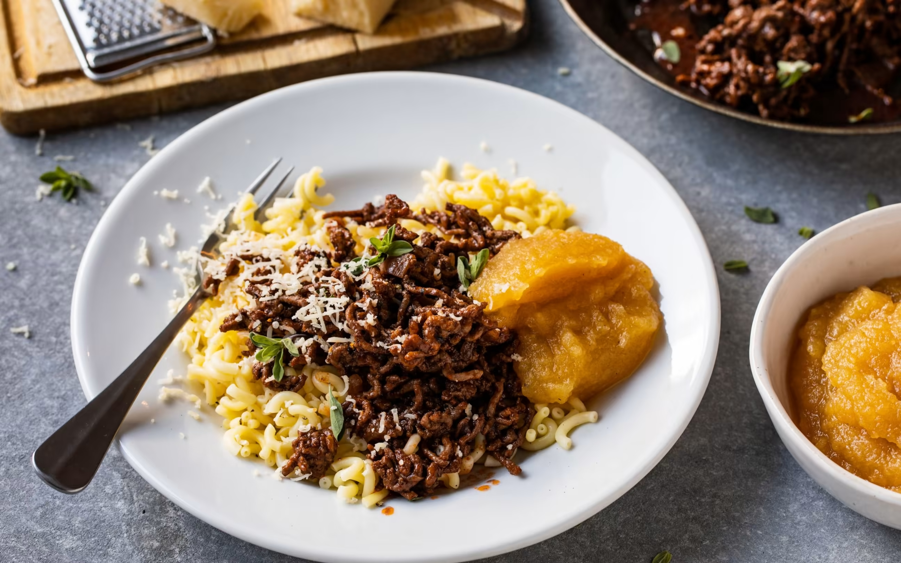

Ghackets mit Hörnli und Apfelmus
 45min
45min
 simple
simple
 20.04.2024
20.04.2024
Zutaten für
| 200 | g | Apfelmus |
| 150 | g | gehacktes Rindfleisch |
| 0.5 | Stk | Zwiebel, gehackt |
| 1 | Stk | Knoblauchzehe, gepresst |
| 100 | g | Hörnli |
| 25 | g | Gruyère |
| 1 | EL | Tomatenpüre |
| Majoran. Thymian, Salz, Pfeffer, Paprika |
Zubereitung
 ca. 15 Minuten
ca. 15 Minuten
 Gesamtzeit ca. 45
Minuten
Gesamtzeit ca. 45
Minuten
Fleisch in der heissen Bratbutter anbraten. Hitze reduzieren. Zwiebel, Knoblauch, Kräuter und
Tomatenpüree mitbraten.
Mit Rotwein und/oder Bouillon ablöschen, würzen. Zugedeckt bei kleiner Hitze 15-20 Minuten
köcheln. Kräuterzweige entfernen.
Hörnli in reichlich Salzwasser al dente kochen. Abgiessen.
Apfelmus in Schälchen verteilen. Hörnli und Gehacktes auf Tellern anrichten, mit Käse bestreuen,
garnieren.
En Guete!
Rezept erstellt von

Martin Jaros